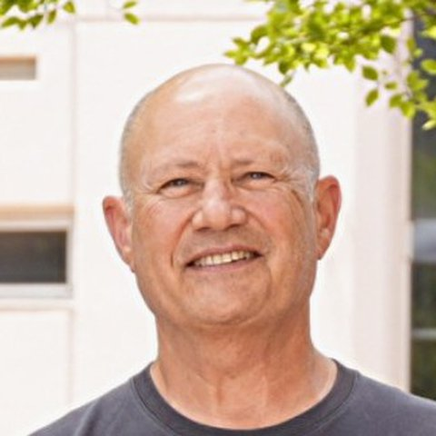
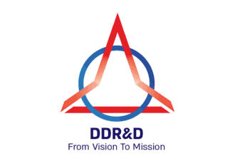
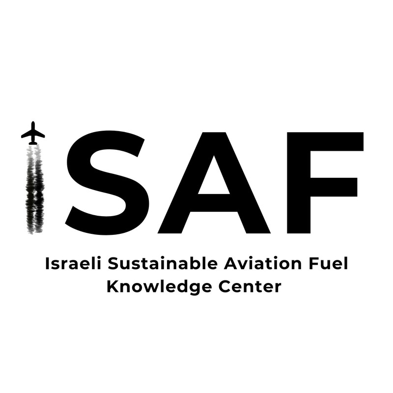
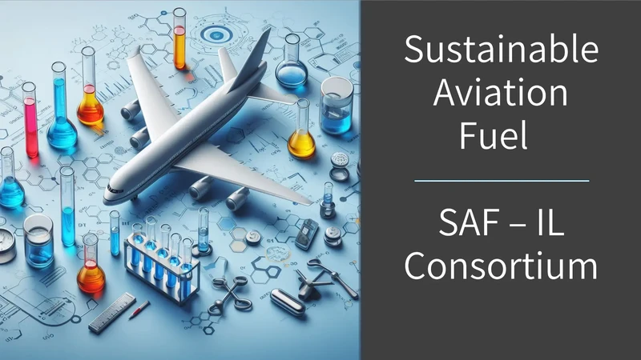
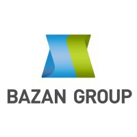
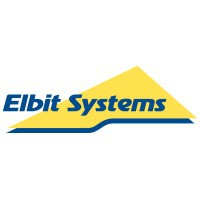

A joint initiative developing breakthrough Sustainable Aviation Fuel technologies — enabling distributed, commercially viable, low‑carbon synthestic jet fuel production and enhancing Israel's energy security.
Over its first two years (2023–2025), the Center laid the scientific, strategic, and infrastructural foundations for a national SAF capability. Beyond technology development, the Boeing–Technion Innovation Center plays a strategic role enabling policy alignment, workforce development, and long‑term infrastructure planning necessary for sustained SAF adoption. By fostering a thriving SAF ecosystem in Israel and integrating it into global supply chains, the Center contributes meaningfully to international commitments to SAF development.

Center Director
Wolfson Faculty of Chemical Engineering
Leading the groundbreaking vision for SAF development at the Technion, Prof. Grader brings decades of expertise in chemical engineering and catalysis to guide the Center's research program.
The Boeing–Technion partnership was initiated by Boeing and includes partners from across the industry and government in Israel. The Israeli Government has provided measures and financial support to accelerate the Israeli SAF industry, including Israel's Ministry of Innovation, Science, and Technology establishing the ISAF research consortium and the Israel Innovation Authority launching SAF‑IL — an incubation program for Israeli start-ups dealing with SAF development.
11 Technion faculty members and dozens of doctoral students from five different faculties are working on various aspects of aviation fuel production, including efficient and competitive manufacturing; theoretical aspects of catalytic reactions and fuel combustion; safety considerations; full life-cycle analysis; and the establishment and operation of an experimental fuel-testing facility at the Technion — only the second of its kind in the world.
"If there is one country in the world capable of solving civil aviation's emissions challenge, it is Israel, led by the Technion — the Israeli MIT."— Dr. Nelson, Boeing
The Center develops SAF from green hydrogen and captured CO₂, advancing catalytic conversion, fuel synthesis, combustion performance, and life-cycle sustainability toward competitive commercial deployment. The Innovation Center focuses on advancing Power-to-Liquid (PtL) and electro-fuel (e‑SAF) technologies based on captured CO₂ and green hydrogen. Achievements in this phase included completion of a National SAF Roadmap, development of Israel’s SAF testing infrastructure plan, and formation of a national knowledge‑sharing consortium connecting government, industry, and academia.
Fueling the future of innovation, sustainability, aviation, energy, and decarbonization.
Advanced catalysts transforming CO₂ and green hydrogen into hydrocarbon fuels.
Optimizing synthesis pathways for jet-grade fuel with commercial viability.
Ensuring SAF meets rigorous aviation combustion and safety standards.
Full cradle-to-grave analysis for net carbon reduction verification.
Comprehensive safety protocols for production, storage, and distribution.
Advancing from lab-scale to competitive commercial deployment.
Selected research from Boeing–Technion SAF Innovation Center researchers.
Grinberg Dana A., et al.
Chemical Science (RSC), 2026
Grinberg Dana A., Van Geem K. M., Cavallotti C., Green W. H.
ACS Engineering Au, 2026
Ritov E., Grinberg Dana A.
Next Chemical Engineering, 2026
Pieters C., Grinberg Dana A.
Digital Discovery (RSC), 2026
Wu J., Grinberg Dana A.
ACS Omega, 2026
Levi Hadari N., Caspary Toroker M.
npj Computational Materials (Nature), 2025
A coalition of industry leaders, academic excellence, and government support driving Israel's SAF ecosystem.





News and press coverage of the Center's milestones and international recognition.
Coverage of the Center's activities and its role in advancing Israel's SAF ecosystem.
The Technion's look at the partnership and its potential impact on the Israeli economy.
Business coverage of the Boeing–Technion collaboration on clean aviation fuel technology.
Coverage of the Boeing–Technion partnership announcement and its significance for the global aviation industry.
The Technion Sustainability Hub's overview of SAF research and the Center's role in it.
The American Technion Society highlights the Center's contribution to Israel's energy independence.
Reach out to learn more about the Boeing–Technion SAF Innovation Center.
Technion – Israel Institute of Technology
Wolfson Faculty of Chemical Engineering
Haifa 3200003, Israel